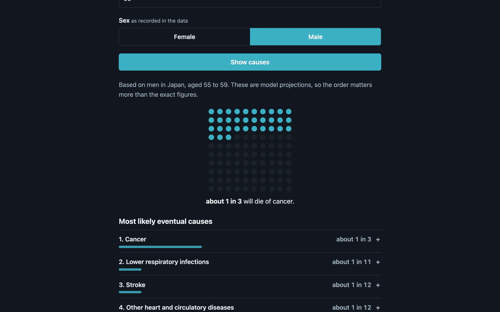
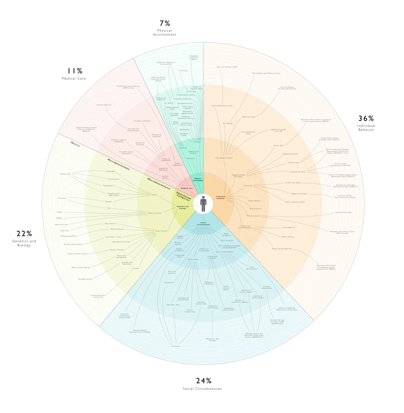
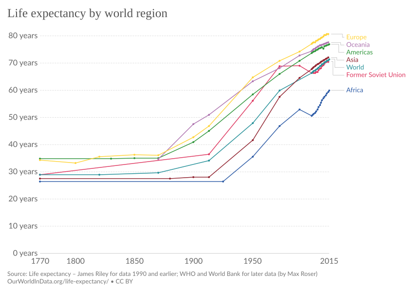

Mortality statistics are public, detailed, and kind of fascinating once you start digging into them. The Institute for Health Metrics and Evaluation publishes the Global Burden of Disease dataset, which breaks down causes of death by country, age group, sex, and year. This project makes that data queryable from a browser. Pick your location, enter your age, select your sex, and it tells you the ten things most likely to kill you, ranked by probability.

{kind=link}
The results are sometimes surprising. Young men in the United States have a wildly different risk profile than older women in Japan. Car accidents and violence dominate in some demographics. Heart disease dominates in others. A few causes show up for almost everyone regardless of demographics (ischemic heart disease is hard to escape), while others are sharply concentrated in specific groups.
Data and computation
The IHME dataset is large. Rather than querying a server on every request, the relevant mortality tables are pre-processed and compiled into a WebAssembly module written in Rust. When you load the page, the WASM module initializes and exposes a prediction function to JavaScript. The location list is cached in localStorage after the first load so subsequent visits don't need to re-fetch it.
Using WASM for this is partly about performance and partly about packaging. The mortality data and the lookup logic ship as a single binary blob that the browser can execute directly. No API server, no database, no backend infrastructure. The whole thing runs on GitHub Pages as a static site.

{kind=link}
What the numbers mean
The output is a ranked list of causes of death for your demographic cell. The GBD provides cause-specific mortality rates \(\mu_c(a, s, \ell)\) per 100,000 population, stratified by age group \(a\), sex \(s\), and location \(\ell\). The ranking orders causes by descending \(\mu_c\): the cause with the highest rate for your cell appears first. The all-cause mortality rate \(\mu = \sum_c \mu_c\) determines life expectancy, and each cause's share of total mortality gives its proportional mortality ratio:
\[\text{PMR}_c = \frac{\mu_c}{\sum_{c'} \mu_{c'}}\]This isn't quite the probability that cause \(c\) will be your actual cause of death (that would require a competing risks model), but it's a reasonable approximation when causes are approximately independent. The tool shows rankings rather than raw percentages because the absolute rates depend on time horizon, which the input doesn't specify.
The interface is deliberately minimal. Three inputs, one button, one list. There's no attempt to soften the presentation or add disclaimers about how "everyone is unique." The data is what the data is. If you're a 35-year-old man in Brazil, the tool tells you what 35-year-old men in Brazil tend to die of, ranked by frequency. What you do with that information is your business.
Implementation
The codebase splits roughly 54% JavaScript, 25% HTML, and 21% Rust. The Rust code handles the data storage, indexing, and lookup. It's compiled to WASM with standard wasm-bindgen tooling. The JavaScript side manages the form, calls into the WASM module on submit, and renders the results as a simple ordered list. No charting library, no D3, no fancy visualization. Just a numbered list of causes of death. Sometimes the most effective data visualization is plain text.